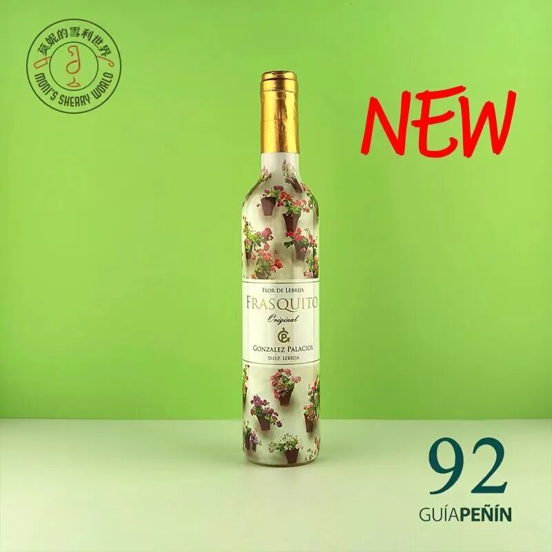
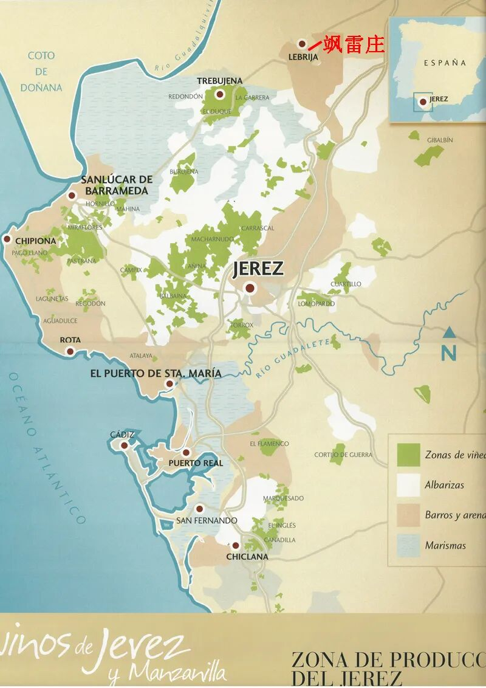
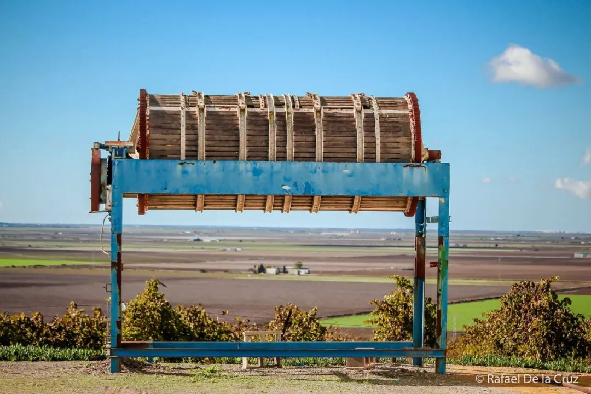
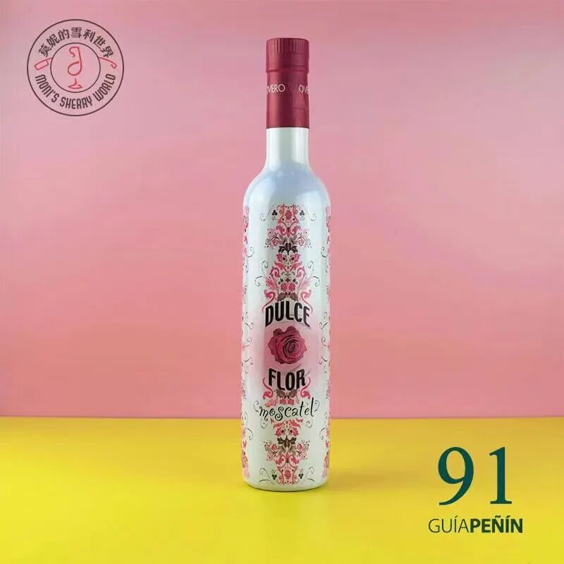
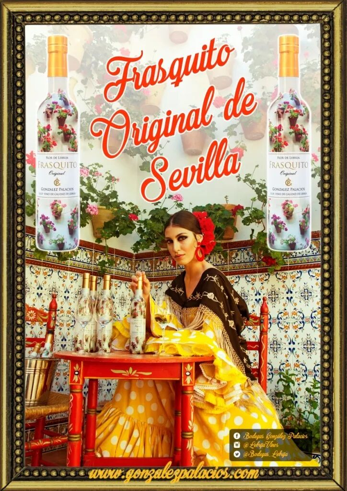
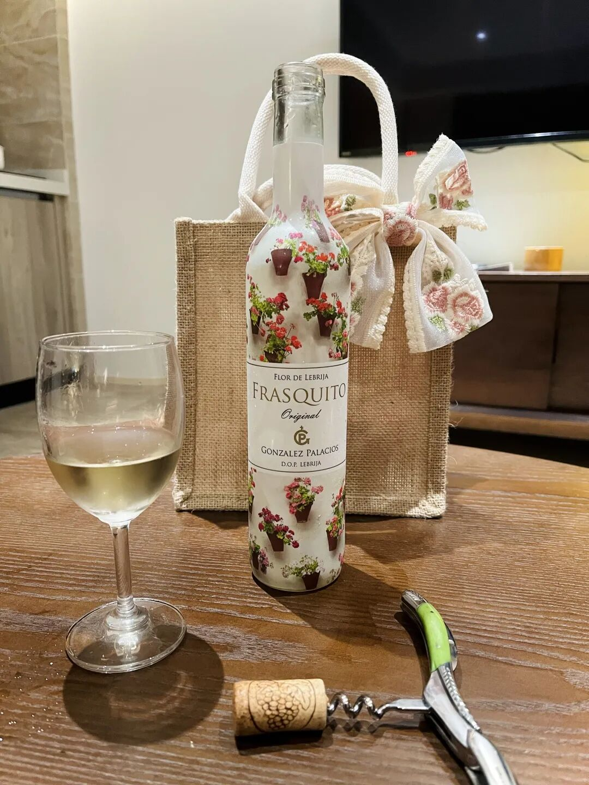

一年陈的Fino，竟是沁人心脾的解暑神器
这支令人惊喜的Fino上架才短短几周，已收获一波好评。除了颜值惹人爱不释手，饮家们更为不知不觉喝完一瓶的超快速度和轻松愉悦惊叹不已！就连平日里对酒花味望而却步的雪利小白也意外享受起来，加入一杯接一杯的行列。

·图片来自买家秀·
如此新鲜易饮，得益于它与众不同的产地：这是我们在中国市场上喝到的第一款来自Lebrija莱芙里哈镇的Fino！

别看Lebrija远离大西洋，但它紧挨着瓜达吉薇河。当湿润的风扫过一马平川的沼泽地，从河面扑向酒庄，站在葡萄园里的我不禁拿出丝巾护住脖子，那是5月中旬，站在太阳下已可短袖。就是这样的奇特风土，滋养活力四射的酒花，造就劲爽清脆的Fino。

如果你是个雪利高手，很可能正在琢磨这个短短一年的陈年时长。雪利监管委员会的不是规定雪利酒的平均陈年时长要至少2年么？你没错，他更没错。
这个位于Lebrija的González Palacios飒雷庄，凭一己之力缔造了 D.O.P. Lebrija，为自己赢得了独立于雪利产区的自由身，自然也无须遵循雪利产区的规定。
尽管Lebrija是雪利产区的生产地区之一，历史上飒雷庄也是雪利产区内大酒庄的酒液供应商，长远来看雪利产区新的政策也在努力修复和这些精品小酒庄的关系、希望他们在雪利产区发光发热。但为自己赢得一条不受制于人的出路，值得一个大写的RESPECT。
·笔者假期出游也选带了“鲜花巷菲诺”·
重点是，从酿酒的角度来说，庄主兼总酿酒师对酒窖里被酒花覆盖一年的Fino非常满意。它既保留了Palomino干白的清新，又散发着酵母咸鲜的劲爽，是一种人无我有的美妙存在，没有理由不分享给更多爱好者。

酒瓶的鲜花巷包装更是安达卢西亚独有的火热张扬，不妨留下当花器吧！

鲜花巷菲诺雪利酒
Flor de Lebrija Frasquito
¥168.00
会员价：138.00
飒雷庄其他产品


“雪利探索者”会员招募！
“莫妮的雪利世界”在雪利酒的专业领域里磨练和学习了8年时间，我们在雪利产区赢得了良好的声誉，并且与很多酒庄建立了信任与生意往来。
伴随着国内越来越多消费者开始关注雪利产区，雪利酒的需求也在日益增长。在踏入第9个年头之际，我们决定成立“雪利探索者”会员俱乐部。
“雪利探索者”俱乐部是国内雪利爱好者的乐园，我们将把专业能力发挥到最大，引领一部分爱好者走在雪利风潮的前沿，把经典，前卫，稀缺的雪利酒精品带给大家。
在此，我们诚邀您成为雪利探索者会员。
专属客服微信：jiang-jiang-ge
一、会员福利
1、会员消费获积分，积分可抵现。
2、会员日常消费享有专属优惠价。
3、新品推荐期间，会员享有折上折特价，同时可获得消费积分。
4、年中、年终大促期间，会员享有大促最低价格。
5、会员生日当天消费，可获5倍积分。
6、会员享有限量商品优先购买权，部分特殊商品会员专属。
7、会员享有参加“莫妮的雪利世界”线下活动优先权。
二、积分获得及使用规则
1、会员在“莫妮的雪利世界”有赞商城，每消费1元获1点积分。
2、每100点积分可抵现1元，可累积使用，无使用上限。
3、积分有效使用期限为每笔订单积分获取日起365天。
4、积分过期自动清零，在有效期内未使用视作自动放弃，不退不补。
5、积分不得转让，不可转移，不折现金。只限在“莫妮的雪利世界”有赞商城内消费时抵现使用。
三、成为会员
加入会员88元/年，会员有效期自缴费日起算。
莫妮的雪利世界
传播专业的雪利酒知识
提供丰富的雪利酒产品
分享雪利酒带来的乐趣

微信客服：jiang-jiang-ge（请注明雪利酒）
雪利微商城入口：莫妮的雪利世界
雪利淘宝店：Sherryworld.taobao.com
京东专营店：datujl.jd.com